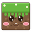

Minecraft 26.3 · Fabric · Weltgenerierung & Voice Chat
Download & Setup starten bootstrap.cmd · 2 KB · ein KlickRechtsklick → Als Administrator ausführen ist nicht nötig
Danach im Minecraft-Launcher das Profil fabric-loader-26.3 wählen und los.
Damit 26.3 mit Mods und andere Versionen ohne laufen:
| Profil | Ordner |
|---|---|
| Vanilla 26.3 | .minecraft\mods |
| Fabric 26.3 | .minecraft\mods26.3 |
Gesteuert über -Dfabric.modsFolder. Welten, Einstellungen und
Ressourcenpakete bleiben geteilt – nur die Mods sind getrennt.
| Version | Minecraft 26.3 · Fabric 0.19.5 |
| Spielport | TCP 25565 |
| Voice Chat | UDP 24454 → della-otis.tun.ply.gg:4243 |
| Plätze | 20 |
| RAM | 6 GB |
Beitreten: Minecraft 26.3 + Profil fabric-loader-26.3, dann
Multiplayer und die playit-Adresse.
Das Setup sichert vorher automatisch, mit Zeitstempel und Prüfsummen:
.minecraft\backups\mods\mods-backup_JJJJ-MM-TT_HH-mm-ss\
├─ fabric-api-0.161.0+26.3.jar
├─ ...
└─ _manifest.txt (SHA-256, Größe, Zeitstempel)